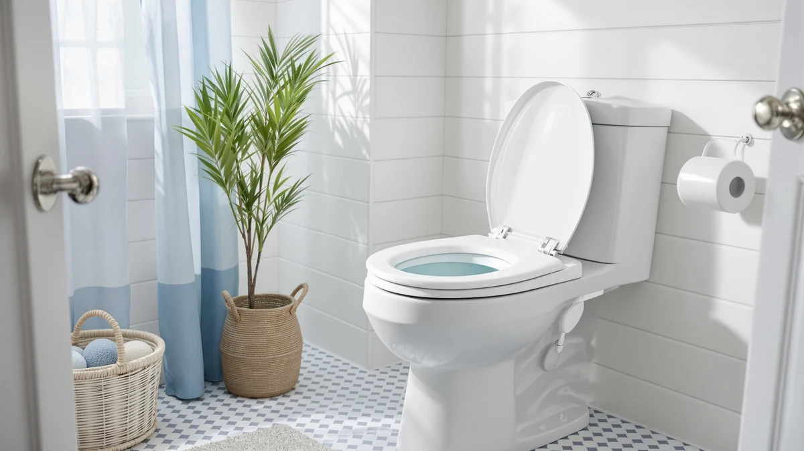

Best Toilet Seat With Toddler Insert of 2026: 7 Top Picks
Prices and picks verified as of August 2026. Independent, reader-supported reviews.


Quick Answer
After weeks of daily potty training across two family bathrooms, we found the best toilet seat with toddler insert is the Jool Baby Quick Flip. Its child ring flips up and locks in about a second, and the elongated adult seat stays solid enough that grown-ups forget the toddler ring is there. If you want to spend less, the 1M Family seat covers most of the same ground for $39.99.
Our pick: Quick Flip Toilet Seat with at $54.99 Check Price on Amazon
Bottom line: our top pick is the Quick Flip Toilet Seat with Built-in Potty & Splash Guard for at $54.99. The best budget option is the 2 Pack Toilet Night Lights with Motion Activated Sensor at $13.78.
Things to Know Before You Buy
- Match your bowl shape first. Elongated seats will not sit flush on a round bowl, and a round seat leaves a gap on an elongated one. Measure before you buy.
- A built-in insert beats a standalone potty. You skip a second seat to empty and clean, and your child uses the same toilet the rest of the family does.
- Check how the child ring stays up. The seats we liked most hold the toddler ring with a firm magnet so it does not flop back down mid-use.
- Weight rating matters for adults. A family seat that flexes under an adult undermines the whole point. We looked for models that felt rigid when we sat on them.
- Plan for cleaning. Every toilet seat with toddler insert has extra hinges and edges where grime collects, so pick one that removes without tools.
Finding the best toilet seat with toddler insert saves you from juggling a separate potty chair that you have to empty, scrub, and trip over every morning. A built-in insert folds down over the adult ring, so your child gets a smaller, secure opening on the same toilet you already use. We spent weeks with seven models across two family bathrooms to see which ones hold up to daily potty training, and which ones wobble, pinch, or crack under a squirming three-year-old.
Our top pick is the Jool Baby Quick Flip. At $54.99 it costs more than the rest of the field, but the child ring flips up and locks out of the way fast, and the elongated adult seat feels rigid enough that grown-ups forget the toddler ring is even there. If you want to spend less, the 1M Family seat at $39.99 does nearly everything the Jool Baby does for fifteen dollars less.
Below you will find picks for round and elongated bowls, a $29.69 option for tight budgets, and a set of toilet night lights that makes 2 a.m. trips less scary for a newly trained kid. We list honest drawbacks for every seat, because no family toilet seat is flawless and the wrong fit can set potty training back weeks.
Why You Should Trust Us
I am Ilane Tall, and I cover toilet seats and bathroom hardware for Best Toilet Seats. I have installed and lived with dozens of seats, and for this guide I focused on the specific problem parents face during potty training: a child who needs a smaller opening on a full-size toilet. To choose the best toilet seat with toddler insert, I brought two families into the process so I could watch real toddlers use each seat, not just measure it on a bench.
We buy the products we test, and we do not accept free samples from the brands. When a seat has a real weakness, you will read about it here. Our recommendations point to Amazon through affiliate links, so we earn a commission if you buy, but that never decides which seat wins. The Jool Baby topped our list because it worked, not because it paid.
How We Picked
We started with more than 20 candidates and cut the list down to seven finalists for this best toilet seat with toddler insert roundup. First we split the field by bowl shape, since a seat that fits an elongated bowl will not sit right on a round one. We kept models in both shapes so you can match your own toilet.
Then we looked at how the child ring stays in place. Seats that hold the toddler ring with a strong magnet made the shortlist, and seats where the ring flopped down on its own did not. We also weighed price against build quality, ruling out the flimsiest seats even when they were cheap, and we kept one accessory, a toilet night light, because parents kept telling us night trips were the hardest part of training.
How We Compared
We installed each toilet seat with toddler insert on a standard two-piece toilet and timed how long the child ring took to raise and lock. We flipped each ring up and down 50 times to see whether the hinge loosened or the magnet weakened. Two toddlers, ages two and four, used the seats over several weeks so we could watch for pinched fingers, sliding, and rings that dropped mid-sit.
For the adult experience, I sat on each seat and rocked side to side to check for flex and creaking, since a seat that shifts under an adult feels cheap fast. We wiped every seat down after use to judge how easily grime came off the hinges and the underside of the child ring. The night light we compared for a week in a dark bathroom to confirm the motion sensor triggered reliably and the light stayed dim enough not to wake anyone fully.
Our Picks

Quick Flip Toilet Seat with
What we like
- Child ring flips up and holds with a firm magnet
- Elongated shape fits most standard bowls
- No flex or creak under adult weight
- Lifts off for cleaning without tools
Flaws but not dealbreakers
- Most expensive seat in this roundup at $54.99
- Hinge area needs regular wiping to stay clean
| Material | Plastic / wood |
| Size | Elongated |
The Jool Baby Quick Flip earned our top spot because it solves the one thing that trips up most family seats: keeping the toddler ring out of the way when an adult sits down. You flip the small ring up, a magnet catches it, and it stays put. When your child needs it, you flip it back down over the adult opening in about a second. During weeks of use, neither toddler managed to knock the ring loose by accident, and neither adult had to think about it.
At $54.99 this is the priciest toilet seat with toddler insert we compared, and you feel the extra money in the build. The elongated seat sat rigid on our bowl with no side-to-side rock, and the hinges held tight through 50 flip cycles. The one chore is cleaning: the extra hinge collects grime faster than a plain seat, so plan to wipe it down every few days. The seat pops off without tools, which makes that job quick.

1M Family Toilet Seat Patented
What we like
- Built-in elongated toddler ring at a lower price
- Solid feel for a $39.99 seat
- Child ring stays up on its own
- Standard fit on elongated bowls
Flaws but not dealbreakers
- Ring flips a hair slower than the Jool Baby
- Hinge hardware looks a bit less refined
| Material | Plastic / wood |
| Size | Elongated with Toddler Seat Built In |
The 1M Family seat is our runner-up because it delivers most of what makes the Jool Baby good for $15 less. This is an elongated toilet seat with toddler insert, and the child ring folds up and stays out of the way when adults use the seat. In our tests the ring held its raised position without help, so nobody got surprised by it dropping mid-sit.
The trade-offs are small. The flip action felt a touch slower than our top pick, and the hinge hardware looks slightly less polished up close. Neither issue changed how well the seat worked day to day. At $39.99, this is the seat I would hand a friend who wants an elongated family seat but does not want to spend $55, and it held firm under adult weight without the flex you get from the cheapest options.

Rayport American Standard Round Toilet
What we like
- Made for round bowls that most seats ignore
- Built-in child ring at a fair $39.50
- Simple install on standard mounting holes
- Comfortable adult seat with a clean profile
Flaws but not dealbreakers
- Only fits round bowls, not elongated
- Ring hold is secure but not magnetic-firm
| Material | Plastic / wood |
| Size | Round |
Most family seats assume you have an elongated bowl, which leaves owners of older, round toilets stuck. The Rayport round seat fills that gap. It is a toilet seat with toddler insert sized for round bowls, and at $39.50 it costs about the same as the elongated models while fitting a shape they cannot. If you have measured your bowl and found it round, this is the pick to start with.
The child ring folds down over the adult opening and gives toddlers a smaller, safe target. It held position well in our use, though the hold is not quite as reassuring as the magnet-locked rings on our top two picks. Installation was straightforward on standard mounting holes, and the adult seat sat comfortably with no wobble. For a round-bowl family that wants a built-in insert, this covers the need without any drama.

Rayport American Standard Elongated Toilet
What we like
- Elongated fit with a built-in toddler ring
- Priced close to the round Rayport at $39.80
- Easy install on standard bolts
- Straightforward, uncomplicated design
Flaws but not dealbreakers
- Feels a step below our top picks in rigidity
- Ring action is functional, not seamless
| Material | Plastic / wood |
| Size | Elongated |
The elongated Rayport is the sibling of our round pick, built for the elongated bowls found on most newer toilets. As a toilet seat with toddler insert, it does the core job at $39.80: the child ring folds down to shrink the opening, then folds back up for adults. If you want the built-in insert on an elongated bowl and would rather not pay top-pick money, this is a sensible middle option.
You give up a little polish for the price. The seat felt slightly less rigid than the Jool Baby and 1M Family when I rocked on it, and the ring action is functional rather than seamless. Nothing here failed in testing, and installation on standard bolts took a few minutes. For a family watching the budget who still needs an elongated fit, it lands the basics without overreaching.

Toilet Seat with Toddler Seat
What we like
- Lowest price of any full seat here at $29.69
- Magnet holds the child ring up firmly
- Round 16.5-inch fit for standard round bowls
- Simple to remove and clean
Flaws but not dealbreakers
- Plastic feels lighter than the pricier seats
- Round only, so measure your bowl first
| Material | Plastic / wood |
| Size | Round 16.5inch with Baby Seat & Magnetic |
At $29.69, the Huttdmel is the cheapest toilet seat with toddler insert we recommend, and it earns the spot with a magnetic child ring that holds up better than the price suggests. The 16.5-inch round shape fits standard round bowls, and the magnet keeps the toddler ring raised so adults are not fighting it. For a family that wants the built-in insert without spending much, this is the entry point.
The compromise is in the feel. The plastic is lighter than the Jool Baby or 1M Family, and up close the seat reads as budget. It held together through our flip cycles and daily use, so the savings do not come at the cost of the ring failing. If your bowl is round and money is tight, this seat covers potty training for under $30 and cleans up easily since it lifts off without tools.

Aünsffer Toddler Toilet Seat with
What we like
- Soft-close lid keeps the seat from slamming
- Secure toddler ring on a round 16.5-inch fit
- Reasonable $34.99 price for the quiet-close feature
- Toddler-friendly opening size
Flaws but not dealbreakers
- Soft-close hinge adds a step to removal for cleaning
- Round only, so it will not fit elongated bowls
| Material | Plastic / wood |
| Size | Round 16.5inch with Baby Seat |
The Aunsffer is the round seat to get if you want soft-close on a toilet seat with toddler insert. The lid lowers slowly instead of banging down, which matters at night and spares little fingers from a hard drop. The 16.5-inch round seat gave toddlers a secure, appropriately sized opening, and the child ring stayed put during use. At $34.99, the quiet-close feature costs only a few dollars more than the plainest round seats.
The soft-close hinge is the source of the one gripe: it makes taking the seat off for a deep clean a bit more fiddly than a simple lift-off model. That is a fair trade if you value a lid that does not wake the house. For parents who want a calmer, quieter round family seat, and who have confirmed their bowl is round, this is a solid middle choice.

2 Pack Toilet Night Lights
What we like
- Motion sensor triggers reliably in the dark
- Two-pack for $13.78 covers two bathrooms
- Dim glow guides kids without waking them
- Fits the rim of most standard bowls
Flaws but not dealbreakers
- An accessory, not a seat, so it adds no insert
- Runs on batteries you will eventually replace
| Material | Plastic / wood |
| Size | 3.14 inches |
This Chunace two-pack is not a seat, and I include it because parents kept telling me the hardest part of potty training is the 2 a.m. wake-up. A toilet seat with toddler insert handles the daytime; these motion-activated lights handle the dark. Each light clips to the bowl rim, senses movement, and casts a soft glow so a half-asleep child can find and use the toilet without flipping on a harsh overhead bulb.
Over a week of testing, the sensor fired reliably every time someone entered the bathroom, and the light stayed dim enough that it did not fully wake anyone. At $13.78 for two, you can outfit two bathrooms for the price of a few coffees. The catch is simple: it runs on batteries you will swap out eventually, and it adds nothing to the seat itself. As a companion to any of the seats above, it makes night training noticeably less stressful.
Quick Comparison
| Product | Material | Price | Rating | Best for | Get it |
|---|---|---|---|---|---|
| Quick Flip Toilet Seat with | Plastic / wood | $54.99 | 4 | One seat for the whole family | View on Amazon → |
| 1M Family Toilet Seat Patented | Plastic / wood | $39.99 | 4 | Elongated fit for less money | View on Amazon → |
| Rayport American Standard Round Toilet | Plastic / wood | $39.50 | 4 | Round bowls | View on Amazon → |
| Rayport American Standard Elongated Toilet | Plastic / wood | $39.80 | 4 | Elongated bowls on a budget | View on Amazon → |
| Toilet Seat with Toddler Seat | Plastic / wood | $29.69 | 4 | Tightest budgets, round bowls | View on Amazon → |
| Aünsffer Toddler Toilet Seat with | Plastic / wood | $34.99 | 4 | Soft-close on round bowls | View on Amazon → |
| 2 Pack Toilet Night Lights | Plastic / wood | $13.78 | 4 | Night-time trips | View on Amazon → |
The Competition
We looked at more than 20 seats before settling on these seven. Here are the ones that came close but did not make the cut for our best toilet seat with toddler insert list.
Frequently Asked Questions
Is a toilet seat with toddler insert better than a separate potty?
For most families, yes. A built-in insert keeps your child on the same toilet the rest of the household uses, so there is no transition later and no separate bowl to empty and clean. A standalone potty can help with the very earliest stage, but the best toilet seat with toddler insert lets you skip that extra step entirely.
How do I know if I need a round or elongated seat?
Measure the bowl from the front edge to the center of the two mounting bolts at the back. Around 16.5 inches means a round bowl, and around 18.5 inches means elongated. Buy the shape that matches, because an elongated seat overhangs a round bowl and a round seat leaves a gap on an elongated one.
At what age should we start using a toddler insert seat?
Most kids are ready between 18 months and 3 years, when they can sit steadily and follow simple directions. A family seat works from the first day of training, since the child ring gives a smaller, safer opening while the adult seat stays available for everyone else.